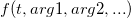

Anpassen mit Integral mit Hilfe der LabTalk-Funktion
Fitting-Integral-LabTalk
Zusammenfassung
Ab Version Origin 8.6führt Origin eine neue LabTalk-Funktion ein, integral(), um eindimensionale Integration durchzuführen. Diese Funktion gibt den Integralwert zurück von:
Die Schnittstelle der Funktion integral() wird wie unten definiert:
integral(integrandName, LowerLimit, UpperLimit [, arg1, arg2, ...])
wobei integrandName hier der Funktionsname des Integrands ist:
- 
Mit anderen Worten tut die Funktion integral() Folgendes:
- Akzeptieren einer anderen Funktion (das erste Argument) als Integrand,
- Durchführen einer Integration für festgelegte untere und obere Grenzen und Zurückgeben des Integralwerts,
- Ggf. Weitergeben der aufeinander folgenden Argumente (Arg1, Arg2, ...) an die Integrandfunktion.
Hiermit kann eine Anpassungsfunktion mit der Funktion integral() definiert und geeignete Anpassungsparameter an den Integrand weitergegeben werden, um eine Integration bei der Kurvenanpassung durchzuführen.
In diesem Tutorial ändern wir das andere Tutorial zum Aufrufen von NAG-Funktionen, um eine Integration während der Anpassung durchzuführen in LabTalk-Form um und zeigen, wie Sie einfach und ohne große Umstände eine Integrationsfunktion anpassen.
Origin-Version mind. erforderlich: Origin 8.6
 | Seit Origin 2018b können Sie eine implizite Funktion mit Hilfe von Integralen definieren. |
Was Sie lernen werden
Dieses Tutorial zeigt Ihnen, wie Sie:
- eine Anpassungsfunktion mit dem Hilfsmittel 'Fitfunktionen erstellen' erstellen.
- eine Fitfunktion mit einem bestimmten Integral mit Hilfe einer LabTalk-Funktion erstellen.
- den Initialisierungscode für die Anpassungsfunktion einrichten.
Beispiel und Schritte
Das Anpassungsmodell
Das Anpassungsmodell wird wie folgt geschrieben
^2}{w^2}}, dt")
In der Anpassungsfunktion gibt es vier Parameter. Um eine Integration durchzuführen, müssen drei von ihnen an den Integrand weitergegeben und die unabhängige Variable als obere Grenze verwendet werden. Daher sollten Sie zuerst den Integrand definieren und dann die Funktion integral(), um Integration in Ihrem Anpassungsfunktionskörper durchzuführen.
Die Funktion definieren
- Drücken Sie F8, um den Dialog Fitfunktionen erstellen zu öffnen. Stellen Sie sicher, dass Sie die Option Eine neue Funktion erstellen ausgewählt haben, und klicken Sie auf Weiter, um zur nächsten Seite zu gelangen.
- Geben Sie auf der Seite Name und Typ einen Funktionsnamen ein, z. B. MyIntegGauss. Belassen Sie den Standardfunktionstyp auf Ausdruck und aktivieren Sie dann das Kontrollkästchen Integration während der Anpassung einschließen. Dadurch gelangen Sie im nächsten Schritt auf eine neue Seite.
- Auf der Seite Integrand können Sie den Ausdruck des Integranden definieren. Momentan unterstützt Origin nur eindimensionale Integrale, d.h., der Integrand sollte EINE Integrationsvariable haben. In diesem Beispiel lautet der Ausdruck des Integranden:
Die anderen Variablen wie xc, w und A sind Parameter des Integranden. Um sie von den Anpassungsparametern zu unterscheiden, wurden sie hier Argumente genannt und verwenden stattdessen die Argumentennamen ixc, iw und iA. Zu einem späteren Zeitpunkt können Anpassungsparameter an diese Argumente weitergegeben werden. Die Integranddefinition sollte folgendermaßen aussehen:
Beachten Sie, dass dies eine LabTalk-Funktion ist. Um den Integrationswert zu erhalten, müssen Sie eine RETURN -Anweisung im Funktionskörper haben. Der Ausdruck des Integranden in diesem Beispiel sollte sein:return iA * exp(-2*(t-ixc)^2/iw^2) / (iw*sqrt(PI/2));
- Wenn alle Einstellungen vorgenommen wurden, klicken Sie auf Weiter, um zur Seite Variablen und Parameter zu gelangen, auf der Sie die Variablen und Parameter für die Anpassungsfunktion definieren können, wie unten zu sehen:
- Auf der nächsten Seite Funktion definieren Sie den Anpassungsfunktionskörper. Wenn Sie zu Beginn des Assistenten des Assistenten Fitfunktionen erstellen die Wahl getroffen haben, eine Integration in Ihrer Anpassungsfunktion einzuschließen, wird eine zusätzliche Registerkarte Integrand auf dieser Seite angezeigt. Auf dieser Registerkarte können Sie die Anpassungsvariablen und Parameter mit den Elementen des Integranden abbilden, einschließlich untere Grenze, obere Grenze und Integrandargumente. Und in diesem Beispiel werden die Variablen, wie unten zu sehen, abgebildet:
| Integrandelemente |
Werte, die an Integrand weitergegeben werden |
| Untere Grenze |
-inf |
| Obere Grenze |
x |
| ixc |
xc |
| iw |
w |
| iA |
A |
Wenn alle Abbildungen entsprechend der obenstehenden Tabelle festgelegt wurden, klicken Sie auf die Schaltfläche Einfügen. Daraufhin wird die gut vorbereitete Funktion integral() in das Feld des Funktionskörpers eingefügt:
integral(MyIntegrand, -inf ,x ,xc ,w ,A)
Dieser Ausdruck beinhaltet das Durchführen einer Integration für die Funktion mit dem Namen MyIntegrand von negativ unendlich bis x und die Weitergabe der drei Anpassungsparameter xc, w und A an den Integranden.
Durch Hinzufügen des Parameters Konstante y0 zu dem Ausdruck, sollte der gesamte Anpassungsfunktionskörper folgendermaßen lauten:
y0 + integral(MyIntegrand, -inf, x, xc ,w ,A);
Die Seite sieht dann möglicherweise wie unten zu sehen aus:
- Wechseln Sie zur Registerkarte Parameter und geben Sie einige geeignete Initialisierungswerte für jeden Anpassungsparameter ein:
Jetzt können Sie auf die Schaltfläche Fertigstellen klicken, um diese Anpassungsfunktion zu speichern.
Kurve anpassen
Kopieren Sie die folgenden Daten und fügen Sie sie in ein Origin-Arbeitsblatt ein:
| X |
Y |
| -1.69897 |
0.13136 |
| -1.22185 |
0.34384 |
| -0.92082 |
0.6554 |
| -0.82391 |
0.73699 |
| -0.69897 |
1.00157 |
| 0 |
1.70785 |
| 0.30103 |
2.31437 |
| 0.69897 |
2.77326 |
| 1 |
2.79321 |
Markieren Sie Y-Spalte und drücken Sie Strg + Y, um den Dialog NLFit aufzurufen. Wählen Sie die Funktion, die Sie gerade definiert haben, und klicken Sie auf die Schaltfläche Fit, um die Anpassung durchzuführen. Das Anpassungsergebnis sollte dem Ergebnis entsprechen, das man mit Hilfe der NAG-Funktion erreicht: